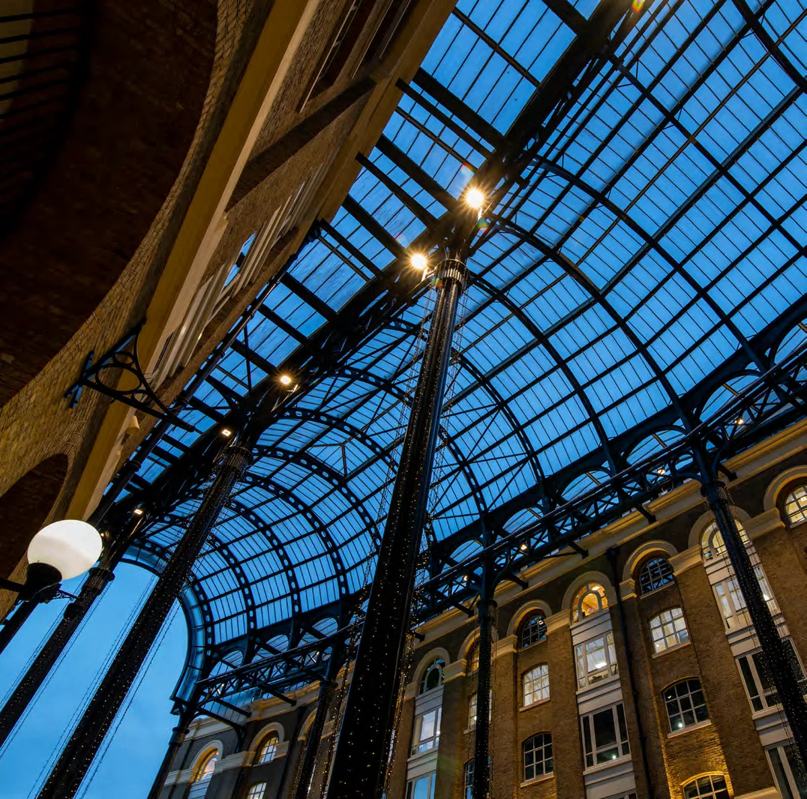
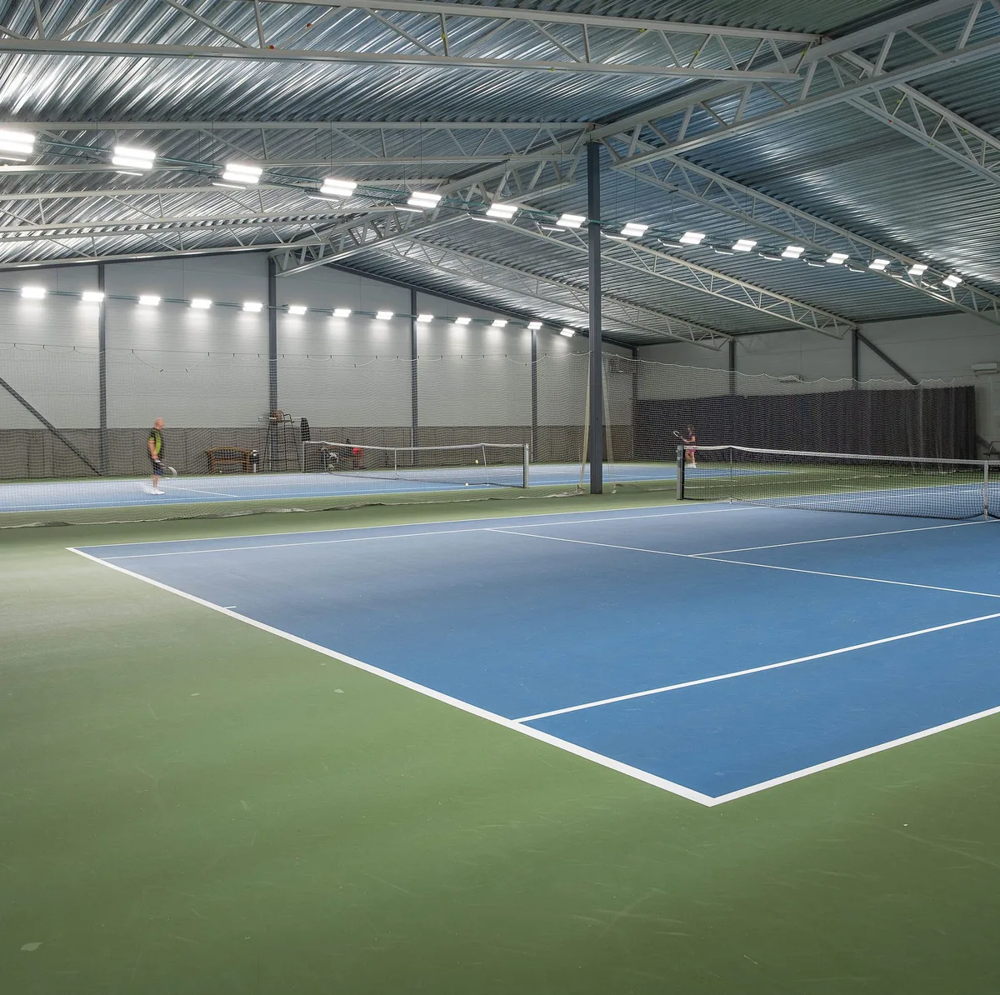
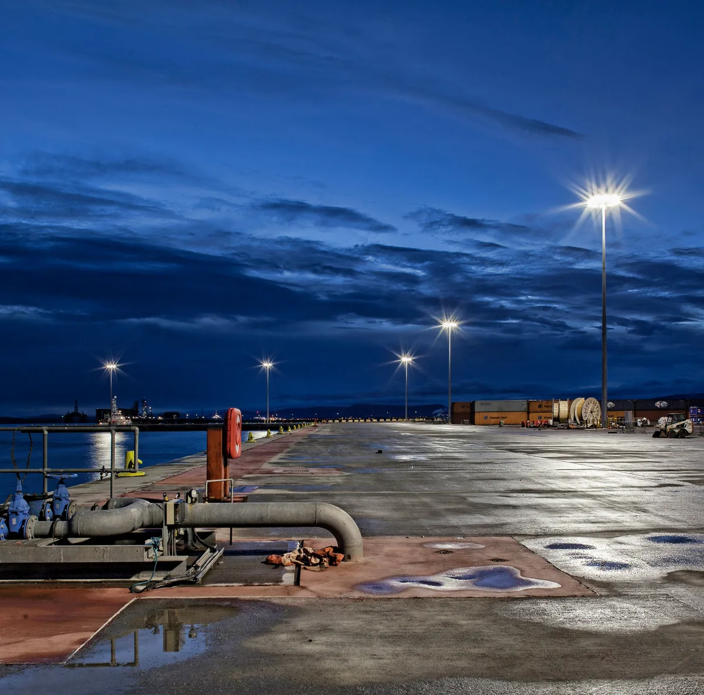
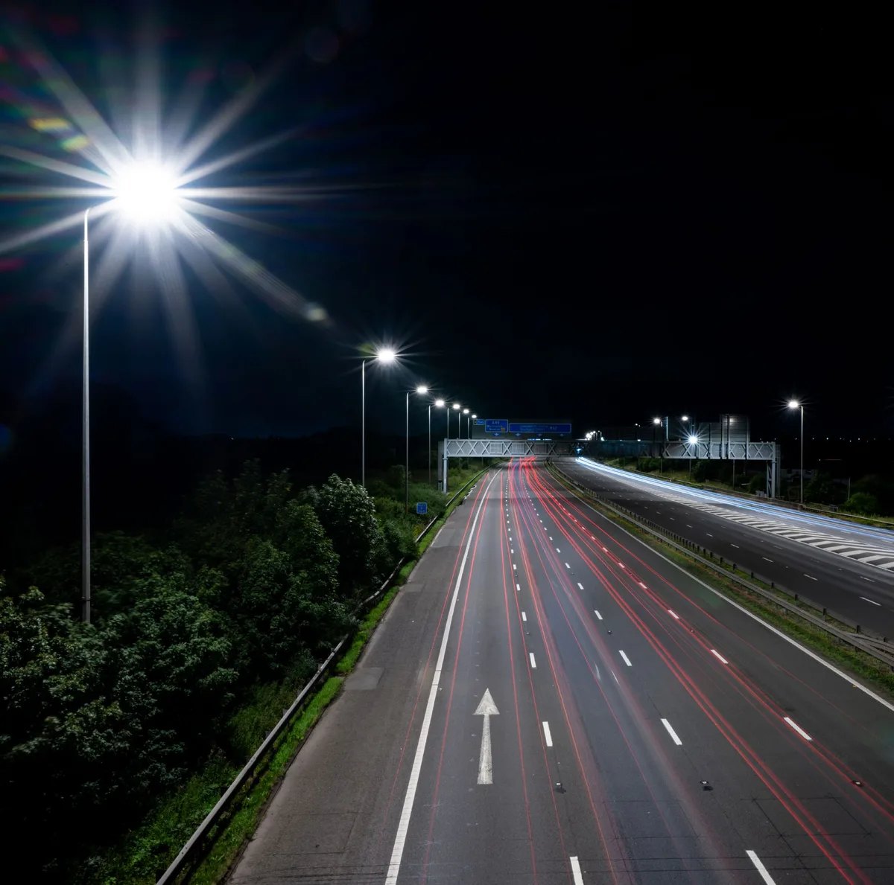
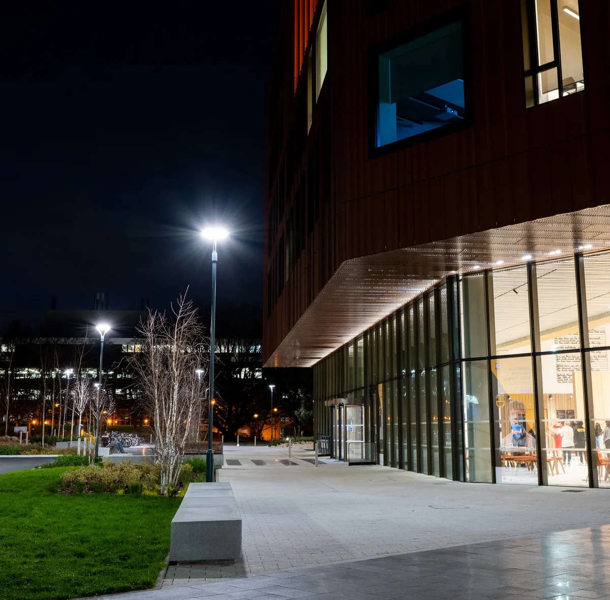

Photo: Holophane case study — platform lighting installation
Photo: Holophane case study — platform lighting installation
Solutions
Manufacturers we represent
Every product page carries the full technical picture — performance data, dimensions, ordering codes, and every download an engineer needs to close out a specification.
Our Approach
Why Lumen Method Exists
Great lighting isn't chosen from a catalogue. It's designed.
At Lumen Method, we don't simply supply luminaires—we partner with engineers, contractors and asset owners to develop lighting solutions that perform from concept through to completion, and throughout the life of the installation.
Successful lighting design is measured by more than calculations and compliance reports. It is measured by how effectively a solution performs throughout its design life, how well it serves the people who use the space, and the value it delivers to the client. Through careful optical selection and considered lighting layouts, we balance performance, constructability, sustainability and long-term value.
We see ourselves as an extension of the project team. Drawing on years of industry experience and technical expertise, we ask the right questions early to develop the most appropriate lighting solution for each application. We work collaboratively with engineers, contractors and asset owners, remaining invested from concept through to project completion. Every design is shaped by the needs of the application, the relevant Australian Standards, and the long-term operational requirements of the installation.
We're equally committed to sharing knowledge. Through practical guidance and education in Australian Standards and lighting design principles, we help our clients make informed decisions and specify lighting with confidence. By strengthening technical understanding across the industry, we aim to improve the quality, consistency and long-term performance of lighting outcomes.
Partnership · Technical expertise · Education
These are the foundations of everything we do, and we look forward to working with you to deliver lighting solutions that perform for years to come.
Project Applications
Solution Examples
Manufacturer reference projects — the products and project types we work with, ahead of our own Australian project record.

Hays Galleria, London
Heritage & retail — Prismpack luminaires, painted black, replaced ageing HID highbays beneath the Grade II-listed glazed roof without disrupting the exposed steelwork.
Read the story →
Gothenburg Lawn Tennis Club, Sweden
Sport & recreation — rotatable Prismaspace optics met EN 12193 Class I across 16 indoor courts, cutting energy use 30% against the fluorescent fit-out it replaced.
Read the story →
Port of Nigg, Scotland
Marine & industrial — high-mast HMAO luminaires lit a 900m deep-water quayside for a £20M redevelopment, with glare control considered for the neighbouring town.
Read the story →
National Highways, North West England
Road & infrastructure — a £132M, 6,000-luminaire V-MAX II retrofit across the region's motorway network, with Dark Sky-approved optics and CMS dimming by route.
Read the story →
University of Warwick — Faculty of Arts
Education & civic — Signature post-tops lit the approach and public realm of the BREEAM Excellent-rated arts building with glare-controlled, fully shielded optics.
Read the story →Contact
Contact Us
For technical enquiries, sample requests or quotations, reach the Lumen Method team directly.
- Region
- Australia
- info@lumenmethod.com.au
- Phone
- +61 481 569 918